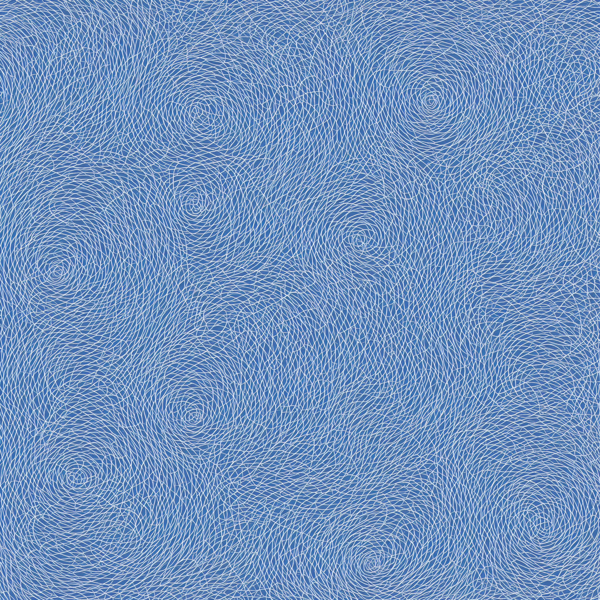
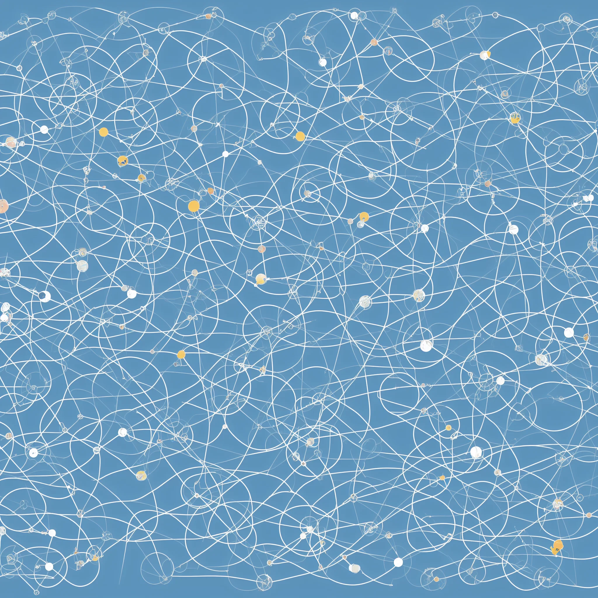
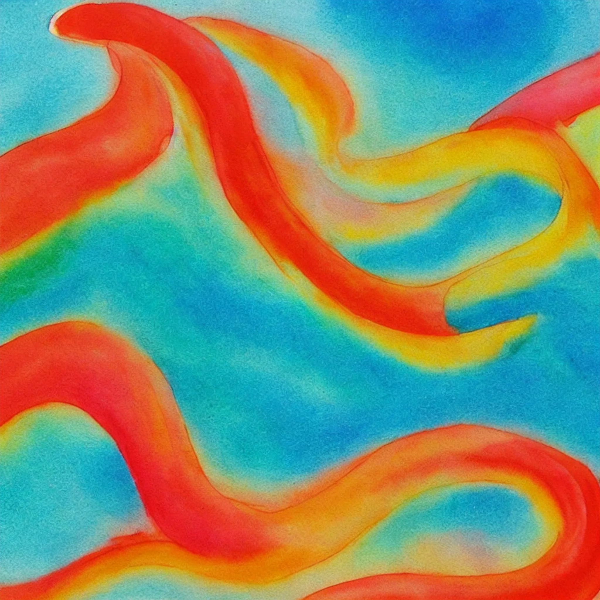

Goals over mechanism
Process exists to serve outcomes, not replace them.
B1C3 builds Aishna and related evidence tracks for agent-mediated cooperation, mission drift diagnosis, and decision support.
B1C3 is a diagnostic and intervention framework for mission drift in complex systems. It helps make goals, evidence, ownership, coordination, and action inspectable so that decisions remain aligned with reality.
Process exists to serve outcomes, not replace them.
Claims matter only if they survive contact with real constraints.
What cannot be inspected cannot be coordinated.
Responsibility becomes useful when someone can act on it.

B1C3 is now focused on Aishna: testing whether independently chosen AI assistants can represent people, discover mutually useful cooperation, and leave auditable records. The older evidence-to-decision work remains as supporting proof of the same operating style: make messy systems inspectable before committing to a product or engagement.
AI assistants can act for individuals, but cooperation still breaks at boundaries between people, platforms, organizations, consent, and trust.
Builds working evidence tracks where declarations, actions, provenance, and next decisions can be inspected rather than assumed.
Review Aishna first, then use the older research and clarity tracks as background evidence for how B1C3 handles ambiguous systems.

The core angle is clarity in mess. These tracks show how B1C3 turns ambiguity into inspectable structure, with Aishna as the active startup evidence track.
Open agent-mediated cooperation: independently chosen AI assistants represent people, read declared needs and boundaries, negotiate useful action, and leave auditable records.
Open the Aishna startup deckUse conceptual mapping, cognitive-load analysis, and UX inspection to make complex material understandable, navigable, and decision-ready.
B1C3 Concept SpaceOne exploratory example of evidence-to-decision work: output reuse, traceability, and reducing decision friction. Useful background, not the current business focus.
Open the research case pageThese are proof tracks, not finished product claims. Aishna is the active validation track; the older pages show the surrounding method and history.

B1C3 is open to collaborators and organizations who need complexity reduced into something they can defend, decide on, and act from.
Current outreach is focused on Aishna validation, startup programs, and small experimental cohorts.